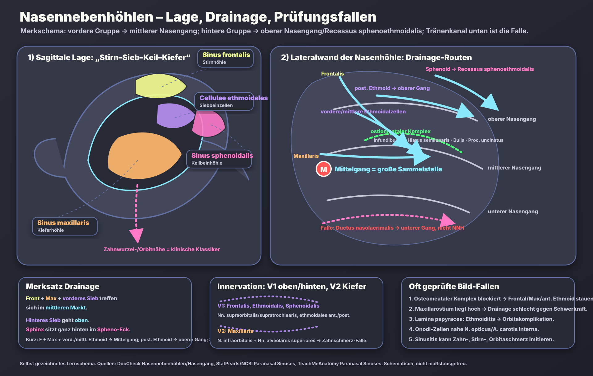

Haupt-Merksatz Drainage
„Front-Max-vorderes Sieb gehen zum mittleren Markt; hinteres Sieb geht oben; die Sphinx sitzt hinten im Spheno-Eck.“
- Front = Sinus frontalis → mittlerer Nasengang, meist über Infundibulum/Hiatus semilunaris.
- Max = Sinus maxillaris → mittlerer Nasengang; Ostium hoch = schlechte Drainage.
- vorderes Sieb = vordere/mittlere Cellulae ethmoidales → mittlerer Nasengang/ostiomeataler Komplex.
- hinteres Sieb = posteriore Ethmoidalzellen → oberer Nasengang.
- Sphinx = Sinus sphenoidalis → Recessus sphenoethmoidalis.
Schema: Lage + Drainagewege + Prüfungsfallen
Selbst gezeichnetes Schema: links Lage im Schädel, rechts die laterale Nasenwand mit Nasengängen. Die Pfeile zeigen Drainagewege; die unteren Boxen fassen Merksatz, Innervation und typische Bildfragen zusammen.

Wahrheitslayer: Drainage der Nasennebenhöhlen
| Struktur | Deutsch | Drainage | Prüfungsfalle |
|---|---|---|---|
| Sinus frontalis | Stirnhöhle | Ductus frontonasalis → Infundibulum/Hiatus semilunaris → mittlerer Nasengang | Frontalitis: Stirnschmerz; Teil der vorderen Gruppe/ostiomeataler Komplex. |
| Sinus maxillaris | Kieferhöhle | Hiatus semilunaris → mittlerer Nasengang | Ostium liegt relativ hoch: Drainage gegen Schwerkraft; Zahnschmerz/odontogene Sinusitis. |
| Cellulae ethmoidales anteriores/mediae | vordere/mittlere Siebbeinzellen | Infundibulum bzw. Bulla ethmoidalis → mittlerer Nasengang | Lamina papyracea dünn: Ethmoiditis kann Orbita erreichen. |
| Cellulae ethmoidales posteriores | hintere Siebbeinzellen | oberer Nasengang | Nicht in den mittleren Nasengang werfen; Onodi-Zellen können N. opticus/A. carotis interna gefährden. |
| Sinus sphenoidalis | Keilbeinhöhle | Recessus sphenoethmoidalis | Tief/posterior; Nähe zu Hypophyse, N. opticus, Sinus cavernosus/ACI als OP- und Infektionsfalle. |
| Ductus nasolacrimalis | Tränennasengang | unterer Nasengang | Beliebte MC-Falle: gehört zur Tränenableitung, nicht zu den Nasennebenhöhlen. |
Wahrheitslayer: Innervation und Schmerzprojektion
| Region | sensibler Nerv | Merker | Typischer Schmerz/MC-Hinweis |
|---|---|---|---|
| Sinus frontalis | N. supraorbitalis / N. supratrochlearis [V1] | „Stirn = V1“ | Stirn-/Augenbrauenschmerz. |
| Ethmoidalzellen | Nn. ethmoidales anterior/posterior [V1] | „Sieb am Orbitadach = V1“ | Medialer Orbitaschmerz; Orbitakomplikationen. |
| Sinus sphenoidalis | v.a. N. ethmoidalis posterior / Äste V1-V2, je nach Quelle | „Sphinx tief hinten“ | Tiefer Kopf-/Retroorbitalschmerz; Nähe zu N. opticus/ACI. |
| Sinus maxillaris | N. infraorbitalis + Nn. alveolares superiores [V2] | „Kieferhöhle = V2/Zähne“ | Oberkieferzahnschmerz trotz primärer Sinusitis; odontogene Sinusitis. |
Die nützlichsten „oft geprüften“ Schemata
- Lateralwand der Nasenhöhle: obere/mittlere/untere Nasenmuschel plus jeweiliger Nasengang. Wichtigste Frage: „Welche Struktur drainiert wohin?“
- Ostiomeataler Komplex: kein einzelnes Loch, sondern funktionelle Engstelle aus Infundibulum ethmoidale, Hiatus semilunaris, Proc. uncinatus, Bulla ethmoidalis, maxillärem Ostium und frontalem Recessus. Blockade → Sinus frontalis, maxillaris und vordere Ethmoidalzellen stauen.
- Koronar-CT der NNH: Orbitaboden über Maxillarsinus, Lamina papyracea lateral der Ethmoidalzellen, Nasenseptum, Conchae, Osteomeatalregion. In MC-Fragen wird oft eine verschattete Kieferhöhle oder Ethmoiditis mit Orbitakomplikation gezeigt.
- Sagittales Schema: Frontal vorne/oben, Ethmoid zwischen Nase und Orbita, Sphenoid tief/hinten, Maxillaris groß unter der Orbita.
- Zahnwurzel-Schema: Oberkiefermolaren/Prämolaren liegen nahe am Sinus maxillaris. Dentalinfektion oder Zahnextraktion kann Sinusitis/oroantrale Verbindung verursachen.
- Entwicklungsfalle: Maxillar- und Ethmoidalräume sind bei Geburt vorhanden; Frontal- und Sphenoidalhöhle entwickeln/pneumatisieren stärker erst später in der Kindheit.
High-Yield Klinik/Prüfung
- Akute bakterielle Rhinosinusitis: häufig nach viralem Infekt; klassisch länger als ca. 10 Tage, „double worsening“ oder schwerer Beginn. Typische Erreger in vielen Prüfungen: S. pneumoniae, H. influenzae, M. catarrhalis.
- Maxillarsinus: häufig betroffen; Drainageöffnung hoch an medialer Wand → Sekret staut leicht.
- Ethmoiditis → Orbita: dünne Lamina papyracea. Warnzeichen: Augenlidödem, Schmerzen bei Augenbewegung, Proptosis, Visusstörung.
- Sphenoiditis: selten, aber gefährlich wegen Nähe zu N. opticus, Hypophyse, A. carotis interna und Sinus cavernosus.
- Liquorrhoe/Anosmie-Falle: Trauma der Lamina cribrosa betrifft Dach der Nasenhöhle/olfaktorische Fasern; nicht einfach „Sinusitis“.
- Schmerzprojektion: Frontal = Stirn; Maxillar = Wange/Zähne; Ethmoid = medialer Orbit/Nasenwurzel; Sphenoid = tief retroorbital/vertexartig.
Mini-Quiz im Prüfungsstil
| Frage | Antwort | Warum? |
|---|---|---|
| Koronar-CT: Verschattung von Frontal-, Maxillar- und vorderen Ethmoidalzellen nach Schleimhautschwellung an einer Engstelle. Welche Region? | Ostiomeataler Komplex / mittlerer Nasengang | Gemeinsamer funktioneller Abflussweg der vorderen Gruppe. |
| Patient mit Sinusitis und Oberkieferzahnschmerz, Zahnarzt findet keine primäre Pulpitis. Welcher Sinus/Nerv? | Sinus maxillaris, V2 | Nn. alveolares superiores/infraorbitalis vermitteln Schmerz in Zähne/Wange. |
| Schwellung medialer Augenwinkel, Schmerzen bei Augenbewegung nach Ethmoiditis. Anatomischer Grund? | Lamina papyracea | Dünne mediale Orbitawand grenzt an Ethmoidalzellen. |
| Welche Struktur mündet in den unteren Nasengang? | Ductus nasolacrimalis | Keine NNH-Drainage; klassische Verwechslungsfalle. |
Quellen / Abgleich
Die Seite fasst öffentlich zugängliche Anatomie- und Prüfungsanker zusammen; die Zeichnung ist selbst erstellt und nicht aus Fremdbildern kopiert.